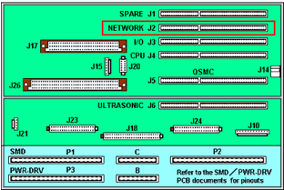
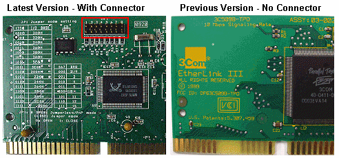

Updating NIC Driver
This document describes how to update the NIC driver.
Required Materials:
The NIC update requires disks from Service Disk Kit PN 973141.
Note: If the instrument connection to the system network hub has a green connection indication on the hub, then the correct NIC driver is loaded already.
Perform this procedure to update the software on the AU HDD when:
- Troubleshooting network errors following AU HDD or NIC replacement.
- An old style NIC is replaced with the newer NIC.
- The AU hard drive is replaced and an old style NIC is present.
Note: New hard drives come configured to work with the newer NIC card.
-
Identify the NIC version.
-
Locate the NIC in the instrument card cage.

Note: The NIC is the short card closest to the back of the instrument behind the I/O PCB. -
Identify the NIC version.
Note:
- The latest version has a jumper connector along the top edge of the PCB. The older NIC does not have a jumper connector.
- If jumpers on the jumper pins of the connector, then the PCB might not be configured correctly. Contact Tech Support for assistance in configuring the NIC. The AU must have a floppy drive and the jumpers must remain on the pins for the configuration to proceed. Otherwise, order another PCB.

-
Locate the NIC in the instrument card cage.
-
Update the NIC driver on the AU HDD to match the NIC version installed in the AU.
Note: Newer Access 2 instruments, without a floppy drive, have the newer version NIC installed. New replacement hard drives are configured to use the newer NIC, so it is not necessary to update the NIC driver when replacing the hard drive on these systems.
- Connect the monitor and keyboard to the AU.
-
Boot the Analytical Unit (AU) with Access2 Boot Disk II, PN A59577 or Master Boot 1 Disk, PN 973143 inserted in the AU floppy drive.
Note:
- The AU will boot to a $ prompt using the floppy disk.
- Newer AU hard drives are configured for the newer NIC.
- The newer NIC comes with floppy disks for loading the new NIC software into older AU hard drives.
- Type login, and then press [Enter]. Type the user name super, and then press [Enter]. Type the password user, and then press [Enter].
-
After the AU has booted, insert the install disk into the AU floppy drive.
- For the newer NIC use Access2 Install Disk II, PN A59578 (new NIC driver).
- For the older NIC use Master Boot 2 Install Disk, PN 973144 (old NIC driver).
-
Type
chd /d0, and then press
[Enter].
Note: Typing dir and pressing [Enter] displays update.sh in the directory listing.
-
Type
update.sh, and then press
[Enter] on the AU keyboard to update the AU hard drive NIC driver software.
Note: If a chd /hc1fmt error occurs, then the system is not recognizing the hard drive (Test this by removing the boot floppy and rebooting the AU. The system boots to an OS9000 prompt when the hard drive is recognized). Verify bios is set correctly for the hard drive type, and that hard drive is connected to the CPU correctly.
- Allow the driver to update. When the Super prompt is displayed, the update is complete.
- Remove the floppy disk, and then reboot the analytical unit.
-
Verify communication between the AU and PC with the new NIC.
- Connect the keyboard and monitor to the PC.
- Press the Windows key, and then select Start > Run, type cmd, and then press[Enter] to open a DOS command window.
-
Type
ping 192.168.2.2, and then press
[Enter] to verify communication between the PC and the instrument (for a new hard drive). For installed systems, use the IP address ending in usually 2.4 for a server or 2.6 for a client.
Note:
- Ensure the network cables are connected correctly, and then reboot the AU and repeat the ping.
- For additional instructions on pinging the AU, refer to the Troubleshooting Network Errors Access 2 document.
- If the instrument connection to the system network hub has a green connection indication on the hub, then the system has the correct NIC driver loaded and the communication issue may be caused by some other problem (I/O PCB, QSMC PCB, AU HDD, ultrasonic card, network hub, network cable).
- When finished, close the CMD dialog box.